With the MoSync SDK you can build applications with HTML5, JavaScript, and CSS without needing to write a single line of C/C++ code. Or you can build hybrid apps that use HTML5/JavaScript for the user interface and C/C++ for the heavy lifting. This tutorial helps you to get an app up and running on Android, Windows Phone, and iOS.
Download the latest version of the MoSync SDK and install it on Windows or on OS X. (For the purposes of this tutorial, we'll use screenshots from a Windows machine.)
Open and register your copy of MoSync on the startup screen:
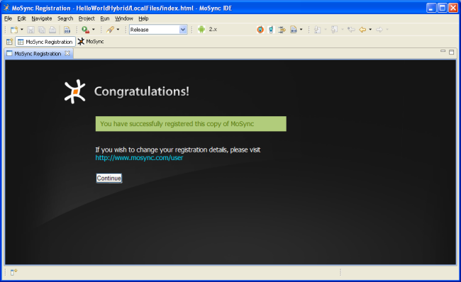
To register only takes a few moments and it gives you access to our Forums.
Next, on the Welcome screen, click "Close this welcome screen and start using MoSync" to open the MoSync IDE (Integrated Development Environment):
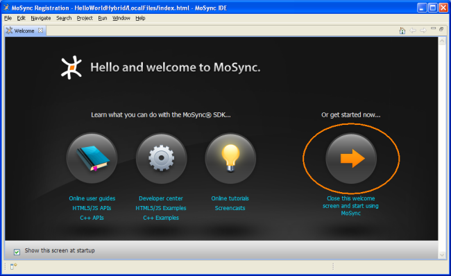
In the IDE, click File > New > Project to open the project wizard:
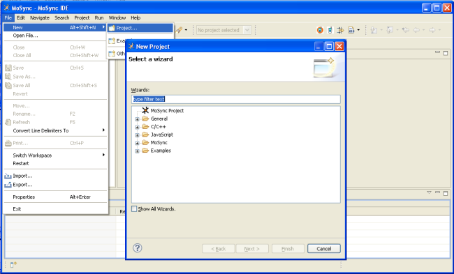
Select MoSync Project, then click Next:
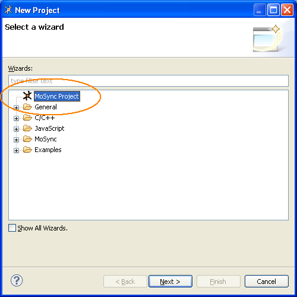
In the MoSync Project Template dialog, select HTML5 > HTML5/JS WebUI Project, then click Next:
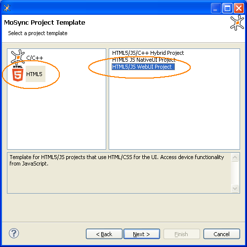
(There are several HTML5 project templates in the MoSync SDK. See Creating Projects from Templates for more details.)
Give your project the name MyFirstWebApp, then click Finish:
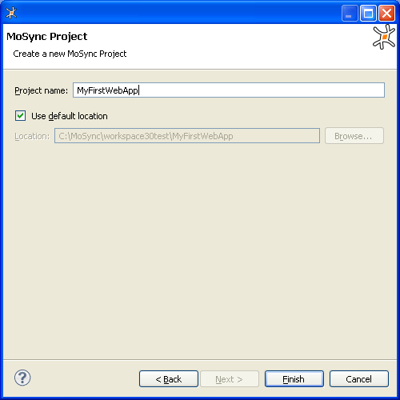
You now have a complete example app generated for you! The IDE returns to the main editing view. Your project's files and resources are shown in the Project Explorer in the left-hand pane, and the index.html file for your project is opened in the edit pane:
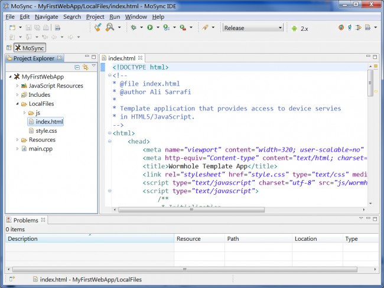
The LocalFiles folder contains the JavaScript and HTML5 files for your app. This is where you put your HTML/CSS/JavaScript and media files. You can add as many files and folders as you want to this directory and MoSync will automatically package them into your app. You don’t have to worry about paths on the device. Just use relative paths in your code and everything will be fine.
To run the app on an Android device, click the Send To Target Device icon on the toolbar:
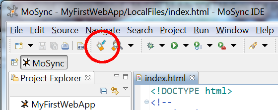
You will then be presented with two options to transfer the app to the device, USB or Bluetooth:
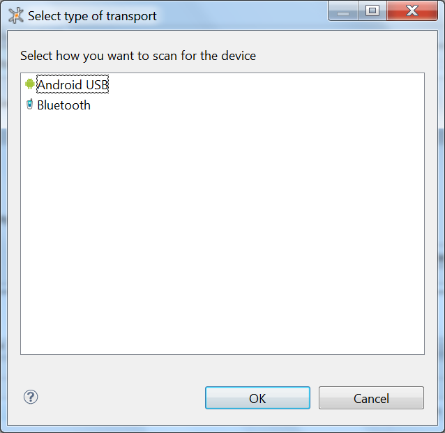
For USB, you may need to install a USB-driver for your device. If you have problems with USB, try Bluetooth. If you use Bluetooth, remember to make your device discoverable, so that your computer can find it. When using Bluetooth, you will be presented with an option to select the target platform (if not done previously). Select the Android platform:
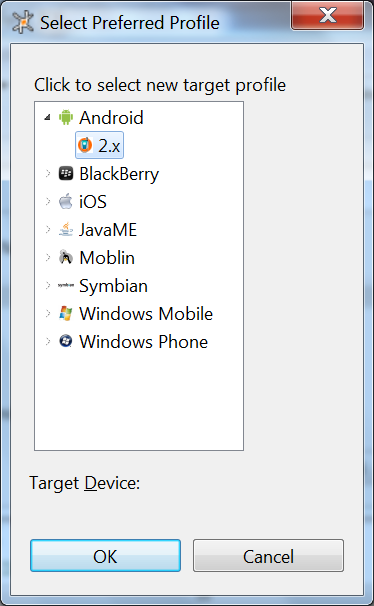
As the next step, the app will be built and sent to the device. You will see a dialog that indicates progress.
If you use USB, the app is launched automatically on the device. If you use Bluetooth, you need to manually install the transferred app on the device.
Congratulations! You have just run your first cross-platfom app!
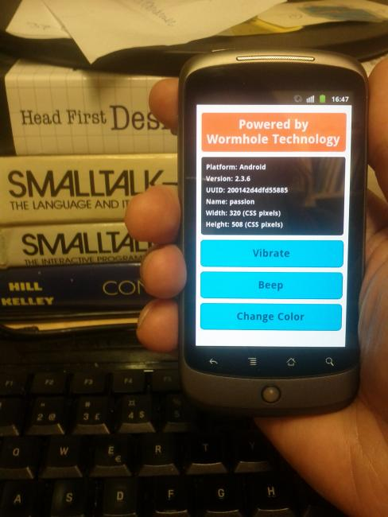
For further details regarding Android development with MoSync, see the document Developing Android Applications.
To run your app in the Android emulator, you need to first download and install the Android SDK.
Select Android as the target platform by clicking the Active Profile button on the toolbar, and then chose the Android/2.x profile:
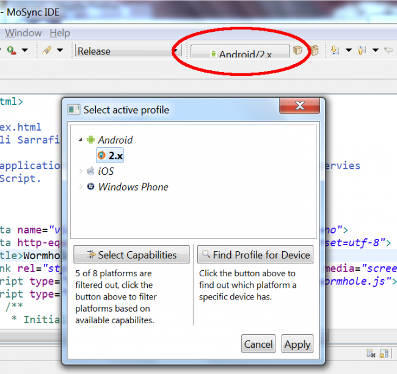
Then click the Run icon on the toolbar. If you have not configured the Android Emulator launcher, you will see the following dialog:
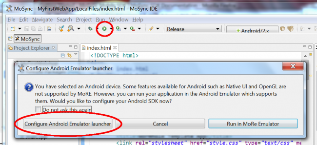
If you need help to configure the Android emulator, take a look at the screencast Running the Android emulator directly from the MoSync IDE.
When you have completed the configuration step, the Prelaunch build progress window will open and your project will be built for the current IDE profile:
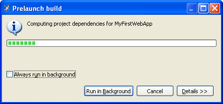
When the build is complete, the Android emulator will open:
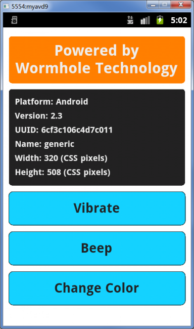
Congratulations! You have just run your first cross-platfom app on Android!
To run your app in the Windows Phone emulator, you need to first download and install the Windows Phone SDK.
Select Window Phone as the target platform by clicking the Active Profile button on the toolbar, and then select the Windows Phone/7 profile:
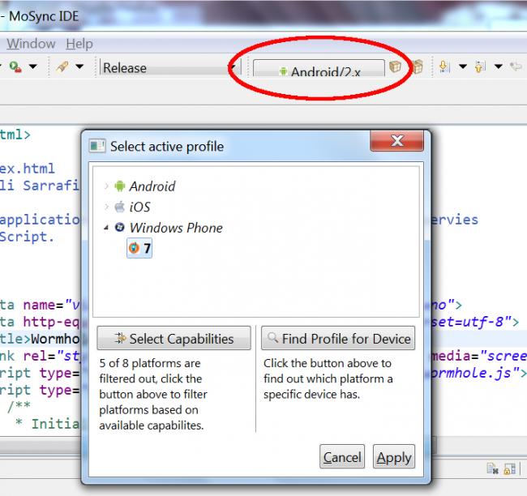
Then click the Run icon on the toolbar and click button Run in Window Phone Emulator:
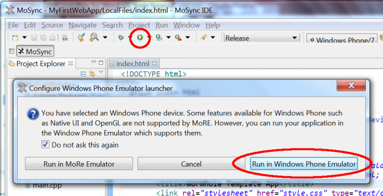
If you have the Windows Phone SDK installed, your app will launch automatically in the Windows Phone emulator:
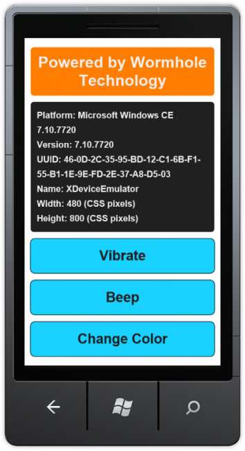
Congratulations! You have just run your first cross-platfom app on Windows Phone!
To run your app in the iOS simulator, you need to be running MoSync on OS X, and download and install Xcode.
Select iOS as the target platform by clicking the Active Profile button on the toolbar, and then select one of the iOS/iPad/iPhone/iPod profiles:
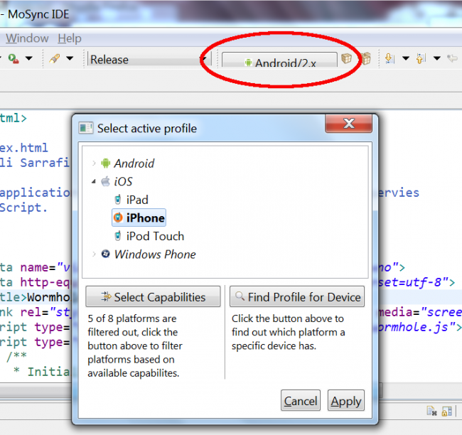
Then click the Run icon on the toolbar. If you have Xcode installed, your app will launch automatically in the iOS simulator:
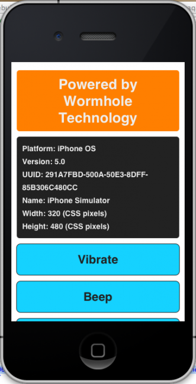
Congratulations! You have just run your first cross-platfom app on iOS!
Now that you know how to get an app up and running, you are ready to start off and explore the MoSync universe:
Happy coding!